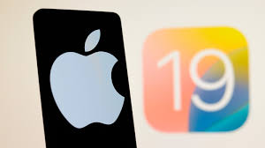
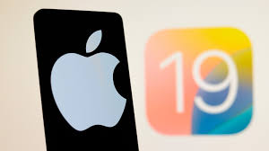

Apple, WWDC 2025 etkinliğinde iOS 19’u tanıttı. Yeni sürüm, yapay zeka destekli mesaj önerileri, görsel analiz araçları ve kişiselleştirilmiş bildirim sistemi ile dikkat çekiyor.
Apple, 10 Haziran 2025’te düzenlenen WWDC etkinliğinde en yeni mobil işletim sistemi iOS 19’u resmi olarak duyurdu. Yeni sürümde öne çıkan en dikkat çekici özellikler arasında Apple Intelligence (AI) adı verilen yerleşik yapay zeka sistemi yer alıyor. Bu sistem sayesinde kullanıcılar artık mesajlarına yapay zeka ile otomatik cevap önerileri alabilecek, fotoğraflar içerisindeki nesneleri tanıyabilecek ve Siri daha doğal bir dil ile yanıt verebilecek.
Güncelleme ayrıca, pil ömrünü uzatan “Smart Battery Saver”, uygulama kilitleme özellikleri ve iPadOS ile daha uyumlu bir kullanıcı arayüzü gibi yenilikleri de içeriyor.
iOS 19’un geliştirici sürümü an itibariyle indirilebilir durumda. Kararlı sürümün ise Eylül 2025’te yayınlanması bekleniyor.


Samsung’un yeni amiral gemisi Galaxy S25 Ultra, 200 MP ana kamera, Snapdragon 8 Gen 4 işlemci ve gelişmiş ekran özellikleriyle geliyor. Peki gerçekten parasını hak ediyor mu?
Samsung Galaxy S25 Ultra, geçtiğimiz ay satışa sunuldu ve teknoloji dünyasında büyük yankı uyandırdı. Cihazın en dikkat çeken özelliği, 200 MP çözünürlüklü ana kamerası. Gece çekim performansı oldukça etkileyici ve AI destekli sahne iyileştirme özellikleri de fotoğraf kalitesine büyük katkı sağlıyor.
Ekran tarafında 6.9 inç Dynamic AMOLED 2X panel kullanılmış. 144Hz yenileme hızı, özellikle oyun oynayan ve içerik tüketen kullanıcılar için büyük avantaj sağlıyor. Snapdragon 8 Gen 4 işlemci ise hem güçlü hem de enerji verimli çalışıyor.
Pil performansı ise beklentileri karşılar nitelikte: 5.500 mAh batarya ile yoğun kullanımda bile bir günü rahatlıkla çıkarabiliyor.
Puan: 9/10